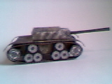
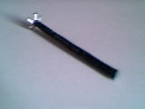
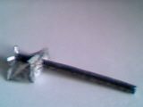
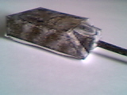
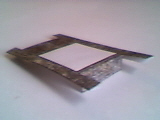
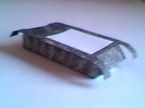
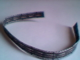
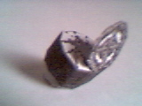
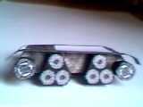

|
|

|
Jagdpanzer
Instruções de Montagem
|

|
|
|
Esta montagem requer um pouco de habilidade e paciência.
Execute a montagem por etapas.
Veja as dicas antes de iniciar a montagem.
BOA SORTE!
|
|
|
|
Jagd Panzer IV (versão 1.0 - 17/03/2001)
Este modelo está dividido em três partes : Torre, Corpo e Esteiras.
As peças foram numeradas de 1 a 8 para podermos identificá-las facilmente.
Aguarde a secagem da cola antes de juntar os módulos.
|

|

TORRE:
Recorte a peça 1. Observe que a base tem vários retângulos brancos (abas) que devem ser
separados, formando várias abinhas na base. Para montar, dobre a aba e então dobre a peça ao meio,
passe cola na aba branca (borda tracejada) e pressione a borda oposta, iniciando por uma das

extremidades. Logo após colar, com o auxílio de um palito, faça com que a peça
tome a forma de um cilindro.
Recorte a peça 2, fazendo cortes bem pequenos no circulo braco. Para facilitar, dobre levemente o
papel (não faça vincos) no centro do pequeno círculo e faça um picote. Dobre em outras direções e faça
outros picotes. Use um palito para rebater as abas para dentro do pequeno orifício, deixando-o cicular.
A montagem da peça 2 é feita colando-se apenas as duas laterais.

Insira a peça 1 no orifício feito na peça 2. Cole as abas internamente. Nesta montagem utilize um
pouco mais de cola para poder fixar bem.
Recorte, dobre e monte a peça 3.
Cole o conjunto peça 1 e peça 2 no retângulo branco no frontal da peça 3.

CORPO:
Recorte a peça 4. Observe que terá de fazer um corte separando uma aba na parte frontal. Dobre
completamente as laterais (veja indicação na figura impressa), colando-as abaixo. Antes de colar,
use algum objeto liso (como a tampa de uma caneta) para deixar o vinco da dobra bem feito.

Depois que eu montei todo o modelo e tirei todas estas fotos, percebi que é mais prático colar o
conjunto de peças 1, 2 e 3 na peça 4 neste momento, ao invés de fazê-lo ao final da montagem.
Recorte, dobre e monte a peça 5. Cole o conjunto de peças 1, 2, 3 e 4 sobre a peça 5, colando
inicialmente a parte frontal. Preocupe-se em manter as partes bem alinhadas.

ESTEIRAS:
Recorte as duas peças 6. Dobre-as completamente (veja indicação na figura impressa) e cole formando
duas peças com impressões nos dois lados. Procure colar de maneira bem alinhada.
Recorte as quatro peças 7. Inicialmente cole as duas extremidades, formando a lateral de um
cilindro. Antes de colar as laterais, acerte o formato circular da peça, para que fique com a forma
desejada.

Recorte as quatro peças 8. Como todas as demais, procure sempre dobrar toda a peça antes de
montá-la. Cole apenas as laterais. Não é necessário colar as partes cinzas. Deixe-as dobradas para
serem coladas posteriormente na peça 5.

MONTAGEM FINAL:
Cole uma peça 7 em cada extremidade das laterais da peça 5, conforme a numeração impressa na peça.
Procure colar as peças de forma a deixá-las um pouco para baixo e para fora.
Cole duas peças 8 em cada lateral,
procurando deixar um pequeno espaço entre a aba da peça 4, onde passará a esteira (peça 6).

Agora encaixe uma esteira neste espaço e cole uma de suas extremidades na base de uma das peças 8.
Passe esta esteira em volta das peças 7 e 8 da lateral, colando onde fizerem contato.
Procure deixar a esteira esticada, pressionado por algum momento as partes que estiver colando.
Cole a extremidade final sobre a extremidade inicial. Procure fazer esta colagem mantendo o
alinhamento.
Parabéns, você terminou a montagem!
|
Se desejar, clique aqui para enviar suas críticas e sugestões.